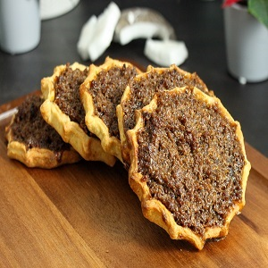

Gizzada
Gizzada, also known as "pinch-me-round" or "gizzarda," is a traditional Jamaican pastry filled with a sweet and spiced coconut filling. It has a crumbly crust and a deliciously aromatic filling that combines coconut, brown sugar, and spices. Gizzadas are a delightful treat enjoyed during holidays and special occasions.
Ingredients
- 2 cups all-purpose flour
- 1/2 cup cold butter, cut into small pieces
- 1/4 cup granulated sugar
- 1/4 teaspoon salt
- 1/4 teaspoon ground nutmeg
- 1/4 teaspoon ground cinnamon
- 1/2 cup grated coconut
- 1/2 cup brown sugar
- 1/4 teaspoon vanilla extract
- 2 tablespoons water
Instructions
- In a large bowl, combine the flour, granulated sugar, salt, nutmeg, and cinnamon.
- Add the cold butter to the bowl and use your fingertips or a pastry cutter to cut it into the dry ingredients until the mixture resembles coarse crumbs.
- Add water, one tablespoon at a time, and mix until the dough comes together. Do not overmix.
- Divide the dough into small portions and shape each portion into a ball.
- Preheat oven to 350°F (175°C).
- In a separate bowl, combine the grated coconut, brown sugar, and vanilla extract to make the filling.
- Take each dough ball and press it into a greased tart or muffin pan, creating a small pastry shell.
- Spoon the coconut filling into each pastry shell, filling it to the top.
- Bake in the preheated oven for about 15-20 minutes or until the pastry turns golden brown.
- Remove from the oven and let the gizzadas cool in the pan for a few minutes.
- Carefully transfer the gizzadas to a wire rack to cool completely before serving.